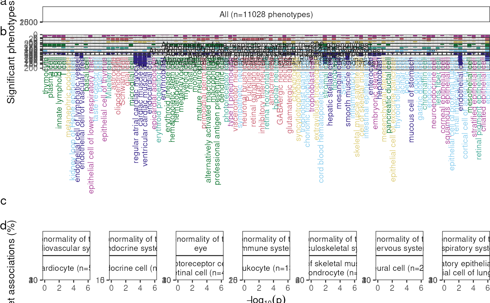

Create a plot summarising MSTExplorer results as a bar chart with multiple facets showing selected branches from the Human Phenotype Ontology (HPO). Also shows a dendrogram of celltype-celltype relationships using the Cell Ontology (CL).
plot_bar_dendro(
results = load_example_results(),
celltype_col = "cl_name",
target_branches = get_target_branches(),
keep_ancestors = names(target_branches),
hpo = HPOExplorer::get_hpo(),
cl = get_cl(),
facets = "ancestor_name",
add_test_target_celltypes = TRUE,
add_prop_test = FALSE,
preferred_palettes = "tol",
legend.position = "none",
heights = c(0.3, 1, 0.15, 0.3),
expand_dendro_x = rep(0.01, 2),
q_threshold = 0.05,
show_plot = TRUE,
save_path = NULL,
height = 16,
width = 13
)The cell type-phenotype enrichment results generated by gen_results and merged together with merge_results
Name of the cell type column in the results.
A named list of HPO branches each matched with CL cell type branches that correspond to on-target cell types across the two ontologies.
Only HPO terms that have these ancestors will be kept.
Human Phenotype Ontology object, loaded from get_ontology.
Cell Ontology (CL) object from
KGExplorer::get_ontology("cl").
A set of variables or expressions quoted by vars()
and defining faceting groups on the rows or columns dimension.
The variables can be named (the names are passed to labeller).
For compatibility with the classic interface, can also be a
formula or character vector. Use either a one sided formula, ~a + b,
or a character vector, c("a", "b").
Using the significant phenotype-cell type
association results, run proportional enrichment tests to
determine whether each cell type is overrepresented in a given HPO branch
relative to all other HPO branches. Overrepresented cell types will be
denoted by "*" above its bar.
Add proportional enrichment results
using run_prop_tests.
Preferred palettes to use for each column.
the default position of legends ("none", "left", "right", "bottom", "top", "inside")
Passed to wrap_plots.
Passed to scale_x_discrete in the cell type dendrogram.
The q value threshold to subset the results by.
Print the plot to the console.
Save the plot to a file.
Set to NULL to not save the plot.
Height of the saved plot.
Width of the saved plot.
A bar chart with dendrogram of EWCE results in each cell type.
results <- load_example_results()
out <- plot_bar_dendro(results = results)
#> Loading required namespace: ggdendro
#> Adding HPO names.
#> Translating ontology terms to names.
#> Adding level-2 ancestor to each HPO ID.
#> Adding ancestor metadata.
#> Ancestor metadata already present. Use force_new=TRUE to overwrite.
#> 2,206,994 associations remain after filtering.
#> Mapping cell types to cell ontology terms.
#> Adding stage information.
#> Filtered 'ancestor_name' : 999,488 / 2,206,994 rows dropped.
#> Translating ontology terms to ids.
#> Translating ontology terms to ids.
#> Using cached ontology file (1/1):
#> /github/home/.cache/R/KGExplorer/ontologies/github/cl_v2023-09-21.rds
#> Keeping descendants of 2 term(s).
#> 2,711 terms remain after filtering.
#> Translating ontology terms to ids.
#> Translating ontology terms to ids.
#> Translating ontology terms to ids.
#> Translating ontology terms to ids.
#> Translating ontology terms to ids.
#> Translating ontology terms to ids.
#> Translating ontology terms to ids.
#> Using cached ontology file (1/1):
#> /github/home/.cache/R/KGExplorer/ontologies/github/cl_v2023-09-21.rds
#> Keeping descendants of 2 term(s).
#> 2,711 terms remain after filtering.
#> Translating ontology terms to ids.
#> Translating ontology terms to ids.
#> Converted ontology to: igraph
#> Converted ontology to: igraph_dist
#> Translating ontology terms to names.
#> Adding logFC column.
#> Using palette: tol
#> Cell type columns already present. Skipping mapping.
#> Ancestor columns already present. Skipping.
#> 2,206,994 associations remain after filtering.
#> Cell type columns already present. Skipping mapping.
#> Running tests: across_branches_per_celltype
#> Scale for x is already present.
#> Adding another scale for x, which will replace the existing scale.
#> Scale for y is already present.
#> Adding another scale for y, which will replace the existing scale.
#> Ancestor columns already present. Skipping.
#> 2,206,994 associations remain after filtering.
#> Cell type columns already present. Skipping mapping.
#> Translating ontology terms to ids.
#> Translating ontology terms to ids.
#> Using cached ontology file (1/1):
#> /github/home/.cache/R/KGExplorer/ontologies/github/cl_v2023-09-21.rds
#> Keeping descendants of 2 term(s).
#> 2,711 terms remain after filtering.
#> Translating ontology terms to ids.
#> Translating ontology terms to ids.
#> Translating ontology terms to ids.
#> Translating ontology terms to ids.
#> Translating ontology terms to ids.
#> Translating ontology terms to ids.
#> Proportional enrichment summary stats:
#> - pct_min: 17.22
#> - pct_max: 64.86
#> - pct_max_mean: 39.9
#> - pct_max_sd: 17.66
#> - enrichment_mean: 4.75
#> Warning: Arguments in `...` must be used.
#> ✖ Problematic argument:
#> • na.rm = TRUE
#> ℹ Did you misspell an argument name?
